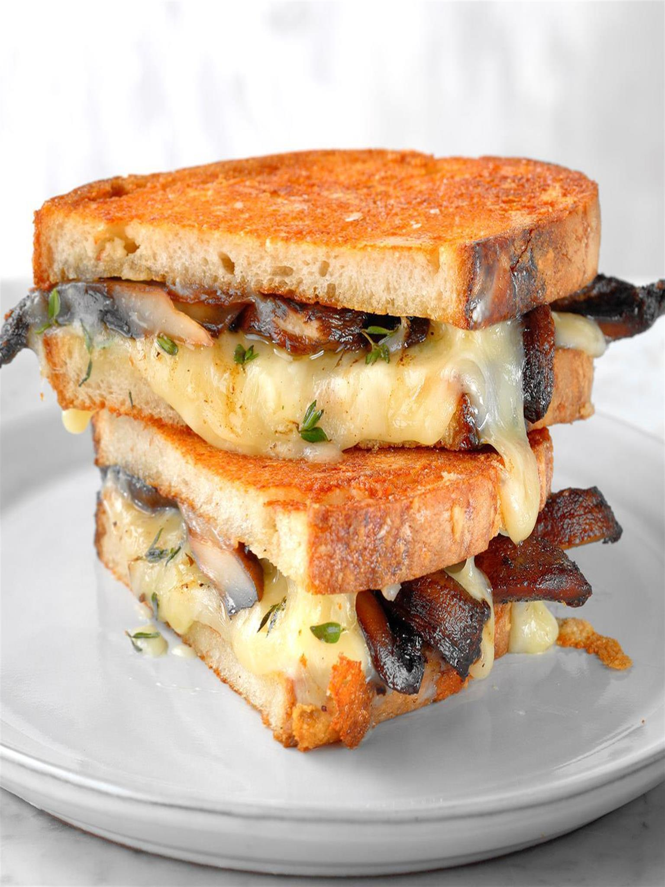

Mushroom and Swiss Panini

Once deemed "lunch food only," sandiwches (better yet, paninis) like this one
could not be more dinner-worthy it features sauteéd mushroom and onion, tangy Digon mustard, and not one,
but TWO types of cheese between slices of sourdough and pan-pressed to crispy, golden
perfection.
Ingredients
- Potatoes (12 oz.)
- Button Mushrooms (8 oz.)
- Yellow Onion (1)
- Mayonaise (2 tbsp)
- Garlic Powder (1 tsp)
- Mushroom Stock Concentrate (1 block)
- Dijon Mustard (2 tsp)
- Swiss Cheese (4 slices)
- Monterey Jack Cheese (1/4 cup)
Steps
- Adjust rack top position and preheat oven to 425 degrees. Wash and dry all produce.
- Cut potatoes into 1/2 inch thick wedges. Trim and thinly slice mushrooms.
Halve, peel, and thinly slice onion.
- In a small bowl, combine mayo with (1/4 tsp) garlic powder, season with salt and pepper.
- Toss potatoes on a baking sheet with remaining garlic powder, drizzle some oil, salt and pepper on them babies.
- Roast your taters on top rack until browned and tender, about 20-25 minutes.
- Meanwhile, heat a large drizzle of oil in a parge pan over medium high heat.
- Add mushrooms to pan, season with salt and pepper and cook, stirring, until lightly browned, 4-5 mins.
- Add onion and another drizzle of olive oil; season with salt and pepper.
- Cook, stirring until veggies are browned and tender, 5-7 minutes.
- Stir in stock concentrate with 2 TBSP of water, cook until water has evaporated
and mixture is jammy.
- Remove from pan when done and wash pan.
- Spread half the sourdough slices with mustard, then top with even layers of Swiss, veggie mix and Monterey Jack.
- Top with remaining sourdough slices to create sandos.
- Melt 1 TBSP of butter for each batch.
- Add sandwiches and push around until butter is absorbed, cook until golden brown, 4-6 minutes.
- Add another TBSP of butter and flip them babies, heating for another 4-6 or until golden brown.
- Plate with your taters!
Back to Home